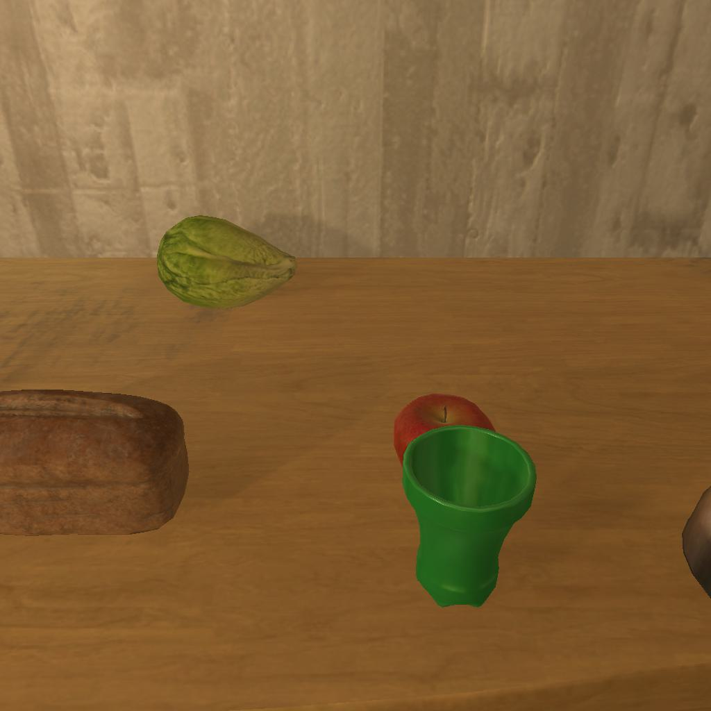

---------------------------------------------------------task: 26---------------------------------------------------------
--------------------------------------------------------------------------------------------------------------------------------------------------------------------
--------------------------------------------------------------------------------------------------------------------------------------------------------------------
Step:--------------------------------------------------------------------------9-------------------------------------------------------------------------------
----------------------------------------
VLM Prompt:
Image1:
Image2:
Image3:
**Instruction**
1. Analyze the provided images to identify all visible household objects and compare the difference between images (e.h. whether the object is opened or not and taken on hand or not), focusing on those relevant to the task description "find two kettle and put them in cabinet."
2. Use the analysis of images and the task hint "The agent must find an object of the desired type, pick it up, find the correct location to place it, put it down there, then look for another object of the desired type, pick it up, return to previous location, and put it down there with the other object." to answer the question: what is the most reasonable action in the choices for the task description "find two kettle and put them in cabinet"?
3. Decide and write the answer using the template: The answer is: (i): , where i is the real number. If there is no desired object in images, search every place based on **Initial Observation** to find the object. And if no one is exactly correct, choose a similar answer.
**Initial Observation**
You are in the middle of a room. Looking quickly around you, you can see countertop (1), coffeemachine (1), cabinet (1-4), drawer (1-8), sink (1), sinkbasin (1), garbagecan (1), fridge (1), microwave (1), dresser (1), sidetable (1)
**Answer Choices**
(1): go to coffeemachine 1
(2): go to cabinet 1
(3): go to cabinet 2
(4): go to drawer 1
(5): go to sink 1
(6): go to sinkbasin 1
(7): go to cabinet 3
(8): go to garbagecan 1
(9): go to cabinet 4
(10): go to drawer 2
(11): go to fridge 1
(12): go to microwave 1
(13): go to dresser 1
(14): go to sidetable 1
(15): go to drawer 3
(16): go to drawer 4
(17): go to drawer 5
(18): go to drawer 6
(19): go to drawer 7
(20): go to drawer 8
(21): take bread 1 from countertop 1
(22): take cup 1 from countertop 1
(23): take lettuce 1 from countertop 1
(24): take apple 1 from countertop 1
(25): take kettle 1 from countertop 1
(26): examine countertop 1
**Answer**
Let's think step by step by following the instructions.
----------------------------------------
----------------------------------------
Original Response:
First, we analyze the provided images:
- Image 1 and 2: We can see a coffee machine with a cup on the countertop, a green rectangle (possibly a sponge or dishcloth), and a red round object (possibly a tomato or an apple). There do not seem to be any kettles visible on the countertop.
- Image 3: We can see a loaf of bread, a piece of lettuce, an apple, and a green cup on the countertop. Again, there are no kettles visible on the countertop.
Based on the task description "find two kettles and put them in the cabinet," we need to find kettles, which are not present on the countertop in any of the provided images.
Next, we refer to the task hint, which suggests that the agent needs to find the object (kettle), pick it up, and then find the correct location (cabinet) to place it. Since there are no kettles on the countertop, the agent must search other locations mentioned in the initial observation to find the kettles.
Considering the initial observation, which mentions the locations available to search in the room, and the need to find two kettles, the most reasonable action would be to go to the cabinet or drawer, as they are common places where kettles might be stored.
Comparing the answer choices with the task at hand, none of the options directly state "take kettle" from a specific location. Therefore, the agent should first go to a cabinet or a drawer to search for the kettles.
Since the task requires finding two kettles, it would be more efficient to start with cabinets, as they are larger and more likely to hold such items. Among the cabinet options provided (1, 2, 3, and 4), there is no specific indication as to which one might contain the kettles. Therefore, the agent should choose any of them as a starting point.
The answer is: (2): go to cabinet 1. If the kettle is not found there, the agent should proceed to check the other cabinets and drawers as necessary.
----------------------------------------
----------------------------------------
>>> Refine Original VLM Response and Get Pure Action: go to cabinet 1
----------------------------------------
-----------------------------------------------------------------
Running time: 26.08980965614319 seconds
Total Money: 16.393419999999995
-----------------------------------------------------------------
-----------------------------------------------------------------
Text Observation:You arrive at loc 2. The cabinet 1 is open. On the cabinet 1, you see a plate 1, a mug 1, a plate 2, a dishsponge 1, and a tomato 1.
-----------------------------------------------------------------
UNSUCCEED